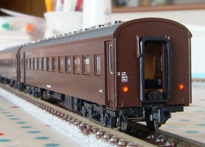
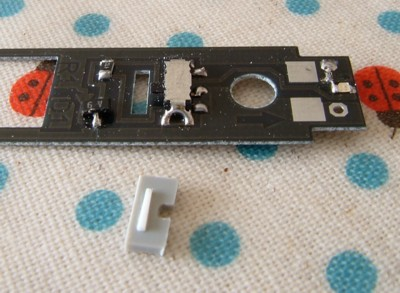
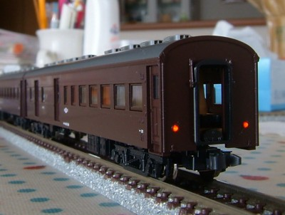
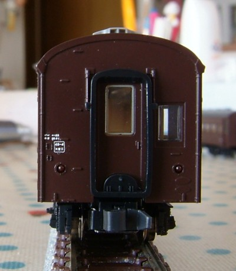
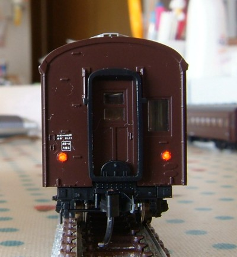
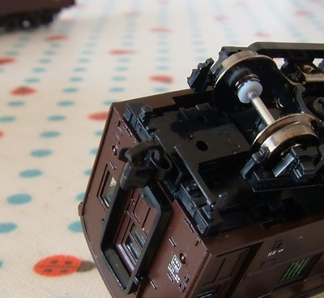
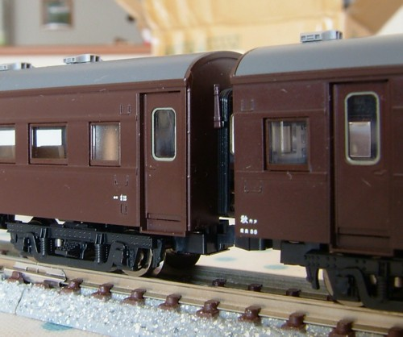
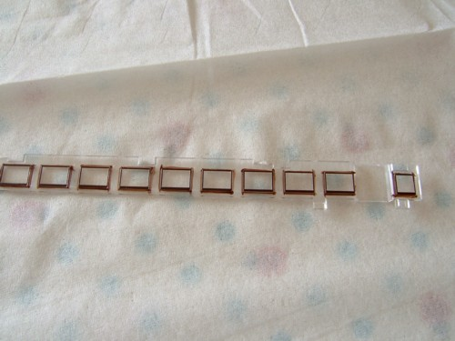

|
最近のトミックス製品の例にもれず、車体の中央が上がったように 「エビ反り」になってますのでそれを修正しました。 熱湯をかけてプラがやわらかくなったところを手で矯正するという荒治療です。 オハフ61は基本的にトイレ側を後部として使うことにし、 こちらに付属の端梁を取り付けました。 |
 |
|  |
オハフ・オハニ・オハユニともにテールライトは両側点灯化しました。 基板はもともと両側点灯可能になっており、 未実装部品(抵抗・ダイオード・LED・スイッチ)を載せると両側を 個別にON/OFF切替可能にして点灯化できます。 1個のスイッチで制御するだけならLEDだけでよいのですが、そうすると個別にON/OFF切替ができないため 機回しして方向転換すると点灯してほしくない側が点灯してしまいます。 一番の難関は表面実装のスイッチでしたが、 日本橋「デジット」で見つけた部品が基板の部品がそれなりに使えました。 分解せずにON/OFFを切り替えられるよう、ツマミもそれらしく自作しています。 この基板は思わせぶりですね〜。次に出てくるのはマニ60か? |
|  |
オハユニの逆向き連結なんてのもなかなかよいです。 |
|  |  |
|
オハフ61の検査表記です。 レボリューションのキハ25用(改良品)を流用。 |
オハユニ61の検査表記です。 こちらはキハユニ26用。オハユニっぽく見える気がします。 オハフ61と場所を変えてあります。 |
|  |
ダミーカプラ用の端梁を使用し、そこにマグネマティック#1025を取り付け。 各車とも電暖関連の部品(ジャンパ・ケーブル)は削除しましたのですっきりしています。 と書いたんですがジャンパ削り忘れてる… 床の電暖トランスはそのままにしてます。電暖トランスと車軸発電機がなぜか別パーツに なってます(思わせぶり)ので、そのうち電暖無しのオプションが発売されるんでないかと。 |
|
所属表記はキシャ会社・換算はレボリューション12系用です。 相変わらずトップコートはしてないんでいつか剥がれるとは思いますが、 自分所有分なんでよいでしょう。 |
 |
|  |
窓枠と車体の隙間から盛大に光が漏れるので、周囲をぶどう色2号で塗装。 窓枠は光沢になってるんでつや消しクリアのトップコートを塗りました。 |